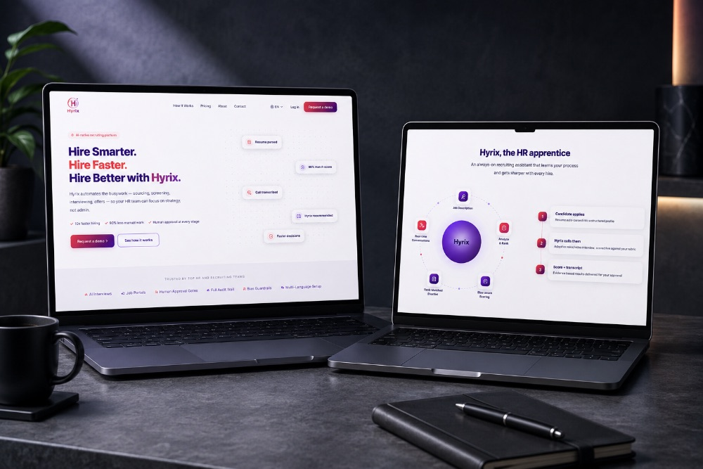

AI Agents & Automation
Intelligent agents that automate workflows at scale.
What's included
Everything needed to take one workflow from manual to autonomous.
Who it's for
Operations and product teams drowning in repetitive, rules-based work — support triage, data entry, approvals, reporting — who need it handled reliably without adding headcount. A good fit if you already have the workflow documented and want it running with a human still in the loop for judgment calls.
Best for teams processing 500+ repetitive tickets or transactions a month.
Our approach
Map the workflow
End to end, flagging where an agent adds the most leverage.
Design & ship
The agent, with monitoring and a human approval gate built in.
Tune in production
Performance against real usage as the workflow evolves.
See it in action

AI RecruitingHYRIX AI
Our in-house recruiting agent automates sourcing, screening, and interviewing with a human in control at every stage.
Know more